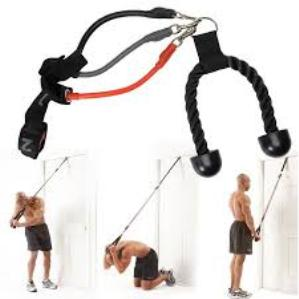
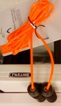

My Simple and Healthy Habits

How I Handle My Daily Physical Activity
I remember once I took one week off from my job to eat mostly soup and work out in order to lose weight and buy a skinny
pink suit that I liked a lot. I shed the weight and buy the size 4 suit. It was gorgeous. Before moving it, I had to part
way with my trophy suit because I got the pounds back.
We surely play around with our weigh. During the holidays, we party, drink and eat more than we usually do and
add going to the gym on the top of our New Year resolutions list. I stop adding going to the gym on any of my lists.
Paying for a gym membership is a waste of money. Usually, we do not have time to go.
Through the years, I have collected
small handy accessories that fit to any living space. Aside from walking and occasional jogging, I mostly exercise at
home using the folliwing items:
-
A
fitness Tracker
In April 2017, one of my sisters was visiting from my country. She asked me to use my credit card
and get her a fitness tracker. Her blood pressure and sugar level were high. Her doctor said she needed to
exercise and using a fitness tracker would motivate her. At one hundred forty nine dollars plus tax apiece,
I also bought one for me and had six months to pay off the balance. It was a very good investment.
Without even realized it, our daily activities such walking to the train to work, moving within the office space,
go grocery shopping and doing chores around the house are sometimes not enough to complete the necessary daily activity
guideline to stay healthy. With a fitness tracker, the guideline is monitored. At the end of the day, it is always possible to go
around a block a few times to reach the 10,000 steps, or do a few sit-ups or take the stairs to burn extra calories.
-
BodyFit By Sports Authority Tricep Crunch Resistance Bands Home Pull Down Exercises Fitness. The picture below
says enough about this band efficacity. It can be stored anywhere.
-
Steppers
are very effective. I have two of them to similate stairs. Once again, easy to use and to store items.
- With Capelli Sport Sit Up Bar, situps
are easy as 1 2 3.
-
Depending on our needs, a variety of types and sizes of weights are available on the market.
Ankle and Wrist weight -
Kettlebell weight - and Two To Eight Pounds Dumbbells.
-
Living from the second to the umpthenth floor will not stop anyone from using small exercise equipments.
Exercises Mats
in all depths and sizes are available to absord noise.
-
A pullup bar can be installed in a narrow hallway or a doorframe.
-
Exercise Balls are great. They can be used as working chair.
- Even in a building hallway, a
Jumprope can be used at least for 5 minutes warm up.


Space, age, time, nothing can stop anyone from reaching the required daily activity goal. Once the mind is set on it, it can be
achieved. It is not a must to go to the gym. There is an endless list of small exercise equipments available on the market that
answers everyone's needs. They can be used while watching TV,
helping kids with homework, working on a project or computer program, just five minutes break every hour will do the job.
Moreover, every time we lack inspiration, we have YouTube to provide us with ways to work out using as less as possible. And, of course,
it not necessary to go on a shopping spree and buy plenty of expensive equipments. Some of them are available at discount
stores at reasonable prices.
{kind=link}